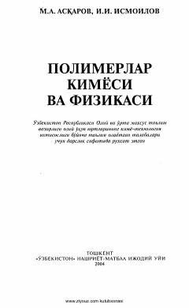

PKOliy o'quv yurtlari talabalari uchun polimerlar kimyosi va fizikasi bo'yicha ilk o'zbek tilidagi darslik.
Ushbu darslik oliy o'quv yurtlarining kimyo-texnologiya ixtisosliklari bo'lak talabalari uchun mo'ljallangan bo'lib, yuqori molekulyar birikmalar kimyosining asosiy tushunchalari, sintetik polimerlarning olinishi, polimerlanish va destruksiya reaksiyalarini yoritib beradi. Kitobda sanoat ahamiyatiga ega bo'lgan usullar, jarayonlar va polimer materiallarining xossalari keng qamrovli misollar yordamida tushuntirilgan.